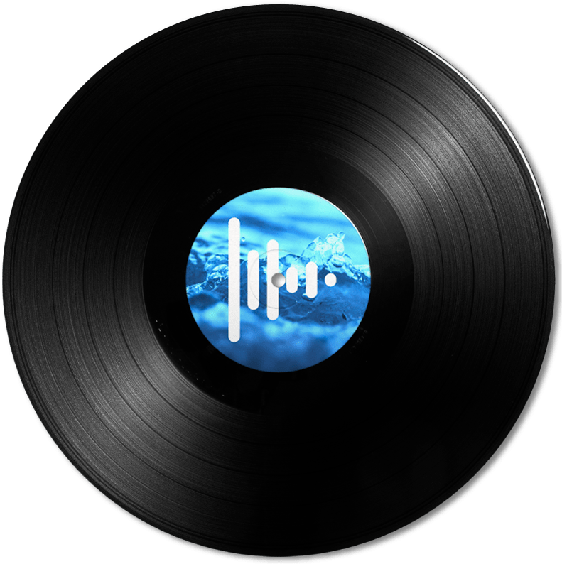

🎵
Arrastrar y soltar
Drag & drop
Añade archivos o carpetas completas. Puedes crear una lista nueva o sumar música a la actual.
Drop individual files or entire folders. Start a fresh list or append music to the current one.
Tu biblioteca local, con una interfaz oscura de estilo neón, búsqueda instantánea, favoritos, ecualizador, controles multimedia y una experiencia pensada para sentirse rápida y personal.
Your local music library with a dark neon interface, instant search, favorites, equalizer presets, media controls, and a fast, personal desktop experience.

F.Crack Player combina biblioteca local, control rápido y personalización visual sin convertir el reproductor en una suite pesada.
F.Crack Player combines a local library, quick control, and visual personalization without turning the player into a bloated suite.
Añade archivos o carpetas completas. Puedes crear una lista nueva o sumar música a la actual.
Drop individual files or entire folders. Start a fresh list or append music to the current one.
Marca canciones con un toque y accede a una vista dedicada de favoritos.
Favorite songs with one click and jump into a dedicated favorites view.
Filtra rápidamente la lista por nombre, incluso con títulos que contienen guiones, puntos o guiones bajos.
Quickly filter by filename, including titles that use dashes, dots, or underscores.
Flat, Bass & Treble, Club, Dance, Full Bass, Headphones, Live, Pop y Rock.
Flat, Bass & Treble, Club, Dance, Full Bass, Headphones, Live, Pop, and Rock.
Play/Pause, pista siguiente y pista anterior responden a las teclas multimedia del teclado.
Play/Pause, Next, and Previous respond to your keyboard's media keys.
Elige colores de contorno, interfaz y visualizador por separado, además de transparencia y lenguaje ES/EN.
Choose border, interface, and visualizer colors independently, plus transparency and ES/EN language.
El mismo paquete te deja escoger entre una instalación integrada en Windows o un ejecutable portable.
The same package lets you choose between a Windows-integrated installation or a portable executable.
F.Crack Player está diseñado para reproducir archivos locales. No necesitas crear una cuenta ni subir tu música para usar el reproductor. Las preferencias y listas se guardan localmente en Windows.
F.Crack Player is designed for local files. You do not need an account or upload your music to use the player. Preferences and playlists are stored locally on Windows.
Elige instalación completa o portable desde el instalador.
Choose full installation or portable mode from the installer.